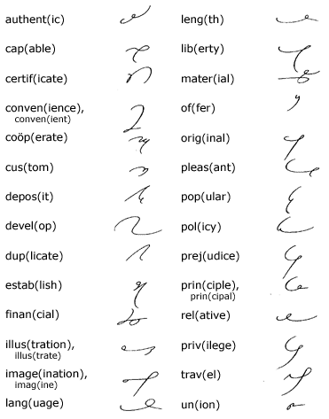

CHAPTER IX
Unit 25
The Abbreviating Principle
192.
The application of the abbreviating principle discussed
in Chapter I, paragraph 23, many
illustrations of which previously have been given, is more or
less flexible and depends to a large extent upon the familiarity
of the writer with the words and subject matter in the dictation.
Note how the principle is applied in the following illustration:
The abbreviating principle is
not employed when advantage may be taken of analogical or definite
word-building rules, and it should not be employed when easily
written word forms are possible without it: When in doubt
write it out.
193.
Short Words. In a small but useful group of common
words—many illustrations of which have been given throughout
this manual in "Brief Forms for Common Words"—the
form stops with a diphthong or a strongly accented vowel:
194.
Long Words. An analysis of hundreds of words shows
that the abbreviations of long words falls into three classes,
from which the following rules have been established:
195.
If there is a longhand abbreviation, it is generally used,
if it furnishes a distinctive outline, as in the words amount
(amt.), April (Apr.), balance
(bal.), memorandum (memo.):
*Memoranda is written
mema; street is written st only with
a street name, otherwise it is str.
196.
Write through the accented syllable if the outline is distinctive.
Illustrations: abbrev for abbreviate, lang
for language, elab for elaborate, etc.:

197. Reading
and Dictation Practice
Transcription Key to this
Unit
- Next Unit - |